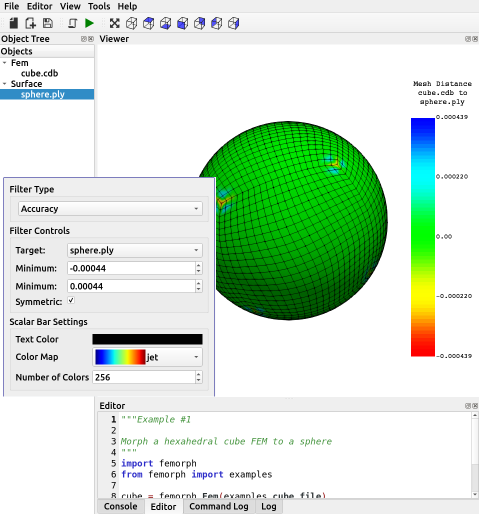

PyVista and QT#
Demonstrate how to use PyVista to create standalone applications using pyinstaller and the Qt framework. (15 min for talk, 10 for exercise)
Tip
This section of the tutorial was adopted from the pyvistaqt documentation and the Extras chapters of the PyVista documentation.
Using PyVista with QT#
PyVista has an interface for placing plots in QT <https://www.qt.io/> in the pyvistaqt library that allows you to combine QT with VTK. This simplifies adding meshes, updating, and controlling them when using Qt.
Installation using pip is:
pip install pyvistaqt
To install this package with conda run:
conda install -c conda-forge pyvistaqt
Once installed, use the pyvistaqt.BackgroundPlotter like any PyVista
plotter.
Brief Example#
Create an instance of the pyvistaqt.BackgroundPlotter and plot a
sphere.
import pyvista as pv
from pyvistaqt import BackgroundPlotter
sphere = pv.Sphere()
plotter = BackgroundPlotter()
plotter.add_mesh(sphere)

Sample PyQt5 pyvista QtInteractor#
Background Plotting#
Normal PyVista plotting windows exhibit blocking behavior, but it is possible
to plot in the background and update the plotter in real-time using the
BackgroundPlotter object. This requires pyvistaqt, but otherwise appears
and functions like a normal PyVista Plotter instance. For example:
import pyvista as pv
from pyvistaqt import BackgroundPlotter
sphere = pv.Sphere()
plotter = BackgroundPlotter()
plotter.add_mesh(sphere)
# can now operate on the sphere and have it updated in the background
sphere.points *= 0.5
Multiple Plotters#
The following example shows how to use an interface with multiple plotters. Each
plotter can be selected and functions like a normal PyVista Plotter instance:
import pyvista as pv
from pyvistaqt import MultiPlotter
mp = MultiPlotter(nrows=2, ncols=2)
mp[0, 0].add_mesh(pv.Sphere())
mp[0, 1].add_mesh(pv.Cylinder())
mp[1, 0].add_mesh(pv.Cube())
mp[1, 1].add_mesh(pv.Cone())
Freezing PyVista with pyinstaller#
You can make some fantastic standalone programs with pyinstaller and pyvista, and you can even make a
graphical user interface incorporating PyQt5 or pyside2. Depending on
your version of VTK, this requires some extra steps to setup.
When running VTK v9, you need to add several additional hiddenimports. For
clarity and completeness, create a spec file (we’ll name it pyvista.spec)
following the directions given at Using Spec Files. Modify the
Analysis and add the following hidden imports:
main_py = os.path.join(some_path, 'main.py')
a = Analysis([main_py],
pathex=[],
binaries=[],
hiddenimports=['vtkmodules',
'vtkmodules.all',
'vtkmodules.qt.QVTKRenderWindowInteractor',
'vtkmodules.util',
'vtkmodules.util.numpy_support',
'vtkmodules.numpy_interface.dataset_adapter',
],
From there, you can freeze an application using pyvista and create
a standalone application.
Examples#
VesselVio is open-source application for the analysis and visualization of segemented vasculature datasets.

MNE Open-source Python package for exploring, visualizing, and analyzing human neurophysiological data: MEG, EEG, sEEG, ECoG, NIRS, and more.

femorph is a mesh metamorphosis software particularly suited for updating finite element models to match optical scan data.
